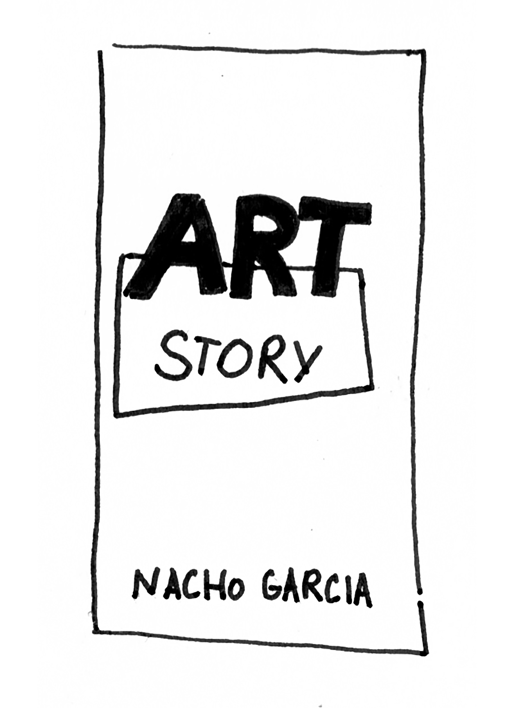
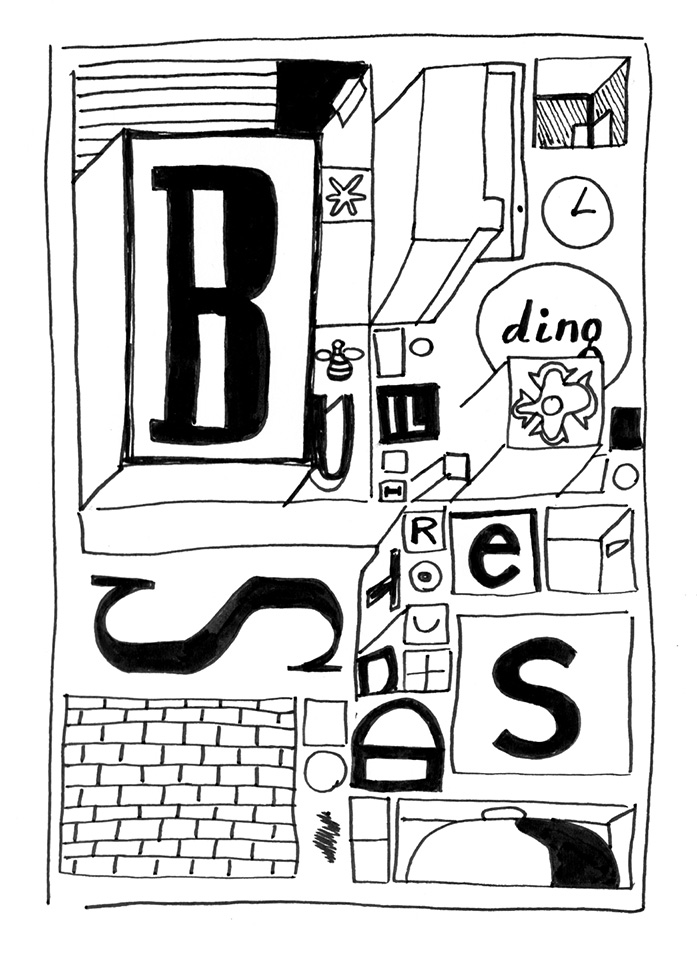
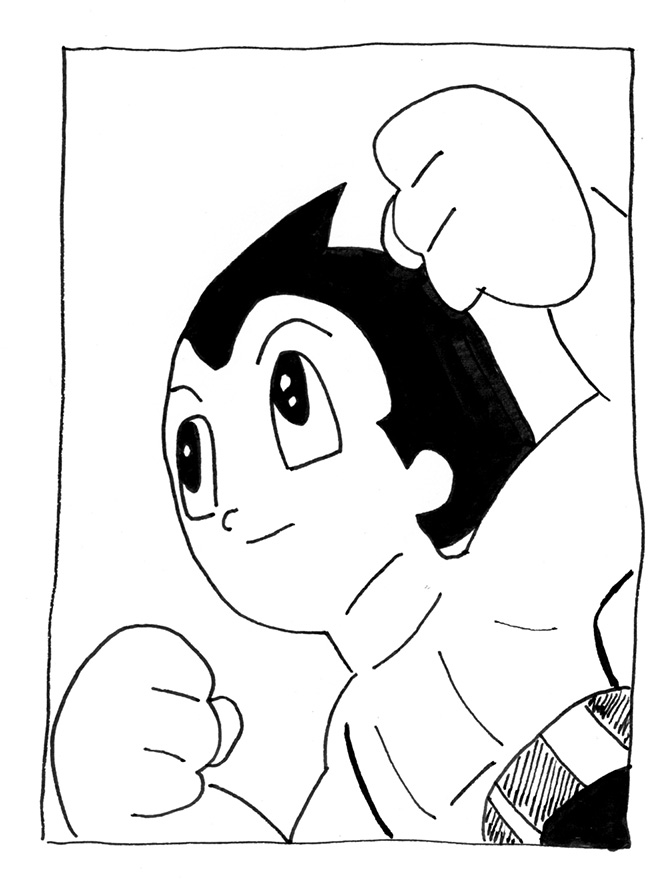
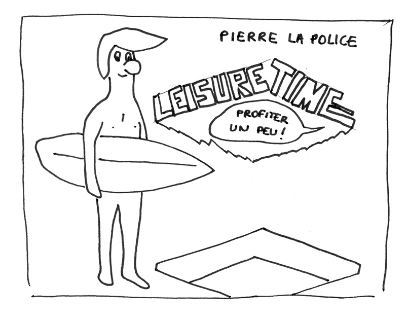

Sören Le Lay – sélection
Paris, France
Dessinateur et assistant-couteau-suisse à la Galerie Arts factory, Paris
Aujourd’hui surtout musicien, il développe un rapport texte/image intéressant dans ses clips et images : sous-titres, lettrages manuscrits…
soundcloud.com/ren-ren-music
Instagram @soren.ren.ren
Gouffre revue lagon #3,
collectif, 2017, FR
La revue collective Lagon explore depuis 2014 des formes nouvelles de narration poético-graphique, présentées par la crème de ce que qualifie la critique canadienne Kim Jooha comme le mouvement European Abstract Formalist Comics, qui rassemble des auteurs de tout le globe (majoritairement européens), motivés par une bande-dessinée formelle et expérimentale. Parmi d’autres fers de lance (AltComics, 2dcloud, Breakdown Press, Le Dernier Cri, Les Ombres, les éditions Matières, Animal Press…), Lagon pousse la BD au maximum de ses capacités. Sans être nécessairement extrême d’un point de vue narratif (certaines pages requièrent tout de même un sacré niveau de concentration), la revue fait la part belle au fond et à la forme, aventureuse et ambitieuse sur le plan éditorial (du haut niveau d’images imprimées en risographie, sérigraphie et offset), et paraît une fois par an, le prochain numéro étant Marécages en février 2019. (www.tcj.com/french-abstract-formalist-comics-french-structural-comics-an-artistic-movement/ ; revuelagon.com/lagon3-gouffre/)
Art Story, Nacho Garcia, auto-publié, 2018, ES
Le Meme n’est-il pas une forme de narration séquentielle ? Prince espagnol de l’humour, Nacho Garcia pratique dans Art Story l’exercice favori des comiques 2.0 au travers d’un prisme absurde et de dessins vectoriels. S’y dressent plusieurs théories et démonstrations sur le monde de l’art, et sur le monde tout court, depuis son prolifique compte Instagram @nachogarciaaaaaa (bolopaper.com/shop/artstory)
Building Stories, Chris Ware, Delcourt, 2014, US
Il aura fallu 10 ans de travail titanesque pour aboutir au coffret Building Stories de Chris Ware. Bien loin de la scène fanzine, ce champion poids-lourd de la bande-dessinée m’a fait chouiner en lisant la vie touchante/dramatique/magnifique et décousue de son héroïne. Aux commandes d’une partie de la narration, aucun ordre de lecture n’est donné, c’est à nous de re-dé-construire l’histoire d’une femme, de son immeuble et d’une abeille. Émotionnellement, c’est une pépite de vie quotidienne. Et graphiquement, c’est vertigineux : tout est techniquement et stylistiquement irréprochable, c’en est presque flippant. Le dessin de lettres est d’une exigence et d’une variété folles, et l’utilisation de codes pictographiques et schématiques offre de nouvelles façons de lire et comprendre une histoire. Dans la même veine de narration temporelle troublée du temps qui passe et de la vie qui avance sans se soucier de rien, je recommande aussi vivement Here de son compatriote Richard McGuire. Bonus américain : la folie psychédélique et les lettrages géniaux de Vortex de Charles Burns. (www.eyemagazine.com/feature/article/smartest-letterer-on-the-planet ; en.wikipedia.org/wiki/Building_Stories)
Astroboy, Corentin Garrido, 2018, FR
Dans la lignée de Jochen Gerner, Corentin Garrido, étudiant à l’EESI Angoulême, extrait ici les représentations graphiques de la disparition, de l’accélération et du déplacement des personnages et des objets dans le manga Astroboy d’Osamu Tezuka. Entre emprunt et nouvelles interprétations des formes, retravailler une œuvre originale en disséquant ses composants est une pratique de l’ordre d’une bande-dessinée remixée. S’en dégagent alors de nouveaux sens, et une esthétique de lecture différente (voir comment Jochen Gerner, dans TNT en Amérique, fait remonter des codes ultra-violents cachés sous des couches de bande-dessinée jeunesse franco-belge). (corentin-garrido.tumblr.com/post/174151279127/extraction-des-repr%C3%A9sentations-graphiques-de-la ; Instagram @corentin.garrido)
Leisure Time, Pierre la Police, item, 2006, FR
Livre/objet, catalogue de l’exposition Surf Now, Apocalypse Later d’Olivier Millagou et ayant été conçu pour être lu comme un livre traditionnel pouvant également servir de dispositif d’exposition.Véritable objet d’art/livre d’artiste, Leisure Time du grand Pierre la Police montre encore ici comment la bande-dessinée peut vivre sous tout un tas de formes ambitieuses. Aucun récit parfaitement clair (impossible à résumer), des moments de détente alternent avec des situations d’urgence, de fusils, de requins et de vivre-ensemble dans un leporello magnifiquement imprimé en lithographie à l’atelier item. Au recto, les actions, dialogues et dessins s’enchaînent tout seuls comme de multiples couches d’un rêve tandis qu’au verso : vitesse de croisière exigée pour un horizon d’eau plate sans fin sur lequel défilent surfeurs et créatures marines en se partageant le décor comme on partage une salle d’attente. Une chance que tout le monde ait apporté son slip de bain. (www.itemeditions.com/catalogue/lapolice/index.html)
Pierre La Police :
The way I set to work is different each time. I often accumulate elements that I classify according to a personal logic. I have piles of pictures with crabs, boxes filled up with magazines specialized in the study of charcoal. Sometimes all that gets mixed up, and when looking at this chaos, I manage to extract stories from it. Just in the same way you would remove sausages from a barbecue. It often occurred that things I had imagined eventually happened in real life. That’s not really surprising, it happens to everyone.